Chapter 21 An Experimental Perspective of the Instrumental Variable
The instrumental variable method has been a powerful tool in econometrics. It identifies causal effects in studies without unconfoundedness between the treatment and the outcome. It relies on an additional variable, called the instrumental variable (IV), that satisfies certain conditions. These conditions may not be easy to digest when you learn them for the first time. In some sense, the IV method is like magic. This chapter presents a not-so-magic perspective based on the encouragement design. This again echos Dorn, (1953)’s suggestion that the planner of an observational study should always ask himself the following question:44
How would the study be conducted if it were possible to do it by controlled experimentation?
The experimental analog of the IV method is noncompliance in the encouragement design (Zelen,, 1979; Powers and Swinton,, 1984; Holland,, 1986).
103 Encouragement Design and Noncompliance
Consider an experiment with units indexed by  . Let
. Let  be the treatment assigned, with
be the treatment assigned, with  for the treatment and
for the treatment and  for the control. Let
for the control. Let
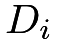
be the treatment received, with for the treatment and for the control. When 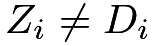
for some unit , the noncompliance problem arises. Noncompliance is a very common problem, especially in encouragement designs involving human beings as experimental units. In those cases, the experimenters cannot force the units to take the treatment but rather only encourage them to do so.
Let
, the noncompliance problem arises. Noncompliance is a very common problem, especially in encouragement designs involving human beings as experimental units. In those cases, the experimenters cannot force the units to take the treatment but rather only encourage them to do so.
Let  be the outcome of interest.
be the outcome of interest.
Consider complete randomization of  and ignore covariates
and ignore covariates  for now. We have the potential values for the treatment received
for now. We have the potential values for the treatment received
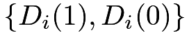
and the potential values for the outcome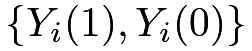
, all with respect to the treatment assignment levels and .
Their observed values are 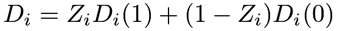
and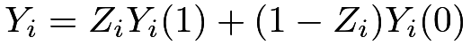
, respectively. For notational simplicity, we assume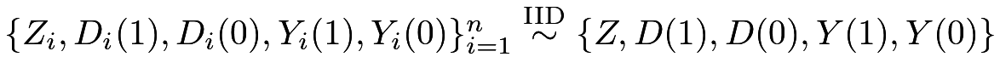
and sometimes drop the subscript when it should not cause confusions.
We start with the CRE.
Assumption 21.1 (randomization)
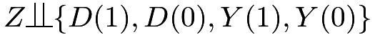
.Randomization allows for the identification of the average causal effects on  and
and  :
:
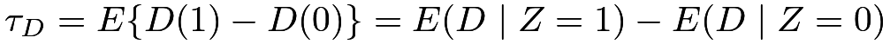 |
and
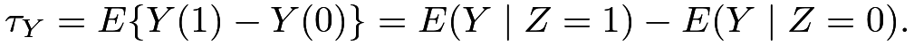 |
We can use simple difference-in-means estimators
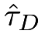
and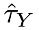
to estimate and
and  , respectively.
, respectively.
Reporting the estimate with the associated standard error is called the intention-to-treat (ITT) analysis. It estimates the effect of the treatment assignment on the outcome, and the CRE in Assumption 21.1 justifies this analysis. However, it may not answer the scientific question, that is, the causal effect of the treatment received on the outcome.
104 Latent Compliance Status and Effects
104.1 Nonparametric identification
Following Imbens and Angrist, (1994) and Angrist et al., (1996), we stratify the population based on the joint potential values of
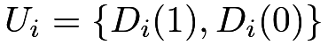
. Because is binary, we have four possible combinations:
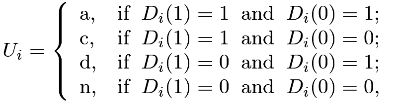 |
where “a” is for “always taker,” “c” is for “complier,” “d” is for “defier,” and “n” is for “never taker.” Because we cannot observe
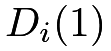
and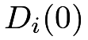
simultaneously,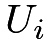
is a latent variable for the compliance behavior of unit.
Based on  , we can use the law of total probability to decompose the average causal effect on into four terms:
, we can use the law of total probability to decompose the average causal effect on into four terms:
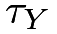 |
 |
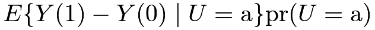 |
(99) | ||
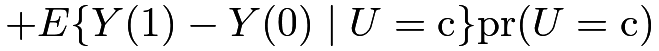 |
|||||
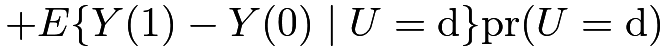 |
|||||
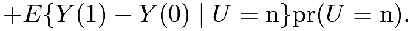 |
Therefore, is a weighted average of four latent subgroup effects. We will look into more details of the latent groups below.
Assumption 21.2 (monotonicity)
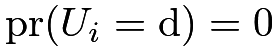
or for all , that is, there are no defiers.
for all , that is, there are no defiers.
Assumption 21.2 holds automatically with one-sided noncompliance when the units assigned to the control arm have no access to the treatment, i.e.,
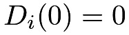
for all units. Under randomization, Assumption 21.2 has a testable implication that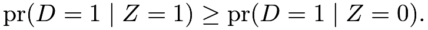 |
(100) |
But Assumption 21.2 is much stronger than the inequality (100). The former restricts and at the individual level whereas the latter restricts them only on average. Nevertheless, when the testable implication (100) holds, we cannot use the observed data to refute Assumption 21.2.
Assumption 21.3 below restricts the first and last terms in (99) to be zero based on the mechanism of the treatment assignment on the outcome through only the treatment received.
Assumption 21.3 (exclusion restriction)
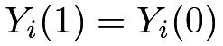
for always takers with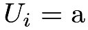
and never takers with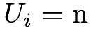
.As equivalent statement of Assumption 21.3 is that
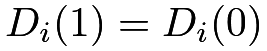
must imply for all. It requires that the treatment assignment affects the outcome only if it affects the treatment received. In double-blind RCTs45, it is biologically plausible because the outcome only depends on the actual treatment received. That is, if the treatment assignment does not change the treatment received, it does not change the outcome either. It can be violated if the treatment assignment has direct effects46 on the outcome, not through the treatment received. For example, some RCTs are not double-blinded, and the treatment assignment can have some unknown pathways to the outcome.
Under Assumptions 21.2 and 21.3, the decomposition (99) only has the second term :
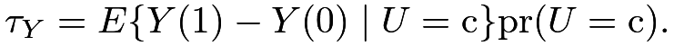 |
(101) |
Similarly, we can decompose the average causal effect on into four terms:
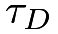 |
|
|||
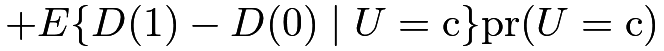 |
||||
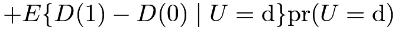 |
||||
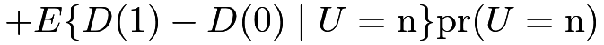 |
||||
|
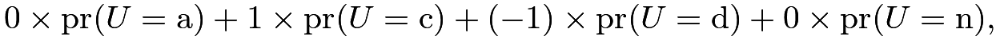 |
which, under Assumption 21.2, reduces to
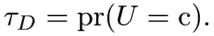 |
(102) |
By (102), the proportion of the compliers
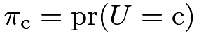
equals the average causal effect of the treatment assigned on, an identifiable quantity under the CRE. Although we do not know all the compliers based on the observed data, we can identify their proportion in the whole population based on (102).
Combining (101) and (102), we have the following result.
Following Imbens and Angrist, (1994) and Angrist et al., (1996), we define a new causal effect below.
Definition 21.1 (CACE or LATE)
Define
 |
as the “complier average causal effect (CACE)” or the “local average treatment effect (LATE)”. It has alternative forms:
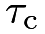 |
|
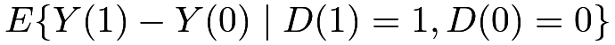 |
||
|
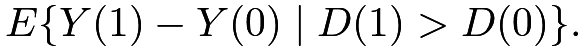 |
The CACE is the average causal effect of on among compliers with
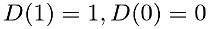
, or, equivalently, units with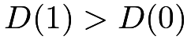
under the monotonicity. Based on Definition 21.1, we can rewrite Theorem 21.1 as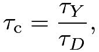 |
that is, the CACE or LATE equals the ratio of the average causal effects on over that on . Under Assumption 21.1, we further identify the CACE below.
Therefore, under CRE, monotonicity, and exclusion restriction, we can nonparametrically identify the CACE as the ratio of the difference in means of the outcome over the difference in means of the treatment received.
104.2 Estimation
Based on Corollary 21.1, we can estimate  by a simple ratio
by a simple ratio
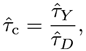 |
which is called the Wald estimator (Wald,, 1940) or the IV estimator. In the above discussion, acts as the IV for .
We can obtain the variance estimator based on the following heuristics (see Example 30.3):
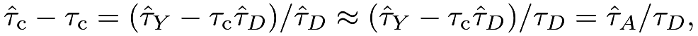 |
where
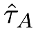
is the difference-in-means of the adjusted outcome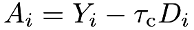
. So the asymptotic variance of is close to the variance of divided by . The variance estimation proceeds in the following steps:- 1.
obtain the adjusted outcomes ;
- 2.
obtain the Neyman-type variance estimate based on the adjusted outcomes:
where and are the sample variances of the ’s under the treatment and control, respectively;
- 3.
obtain the final variance estimator
See Problem 21.2 for the justification of the above variance estimator. Alternatively, we can also use the bootstrap to approximate the variance of . The following functions can calculate the point estimator and the standard error with the formula and the bootstrap.
Under the null hypothesis that , we can approximate the variance by , where is the Neyman-type variance estimate for the difference in means of . This variance estimator is inconsistent if the true is not zero. Therefore, it works for testing but not for estimation. Nevertheless, it gives insights for the ITT estimator and the Wald estimator. The ITT estimator has estimated standard error . The Wald estimator essentially equals the ITT estimator multiplied by , which is larger in magnitude but at the same time, its estimated standard error increases by the same factor.
Based on the variance estimators and , the confidence intervals for and are
and
respectively, where  is the
is the  upper quantile of the standard Normal random variable.
These confidence intervals give the same qualitative conclusions since they will both cover zero or not. In some sense, the IV analysis provides the same qualitative information as the ITT analysis of although it involves more complicated procedures.
upper quantile of the standard Normal random variable.
These confidence intervals give the same qualitative conclusions since they will both cover zero or not. In some sense, the IV analysis provides the same qualitative information as the ITT analysis of although it involves more complicated procedures.
105 Covariates
105.1 Covariate adjustment in the CRE
We now consider completely randomized experiments with covariates and assume
With covariates , we can obtain Lin, (2013)’s estimators and for both and , resulting in .
We can approximate the asymptotic variance of using the bootstrap. The following functions can calculate the point estimator and the standard error based on the bootstrap.
105.2 Covariates in conditional randomization or unconfounded observational studies
If randomization holds conditionally, i.e.,
then we must adjust for covariates to avoid bias. The analysis is also straightforward since we already have discussed many estimators in Part III for estimating the effects of on and , respectively. We can just use them in the ratio formula and use the bootstrap to approximate the asymptotic variance.
I do not implement the corresponding estimator and variance estimator but relegate it as Problem 21.8.
106 Weak IV
106.1 Some simulation
Even if , there is a positive probability that is zero, so the variance of is infinity (see Problem 21.1). The variance from the Normal approximation discussed before is not the variance of but rather the variance of its asymptotic distribution. This is a subtle technical point. When is close to , which is referred to as the weak IV case, the ratio estimator has poor finite-sample properties. In this scenario, has finite-sample bias and non-Normal asymptotic distribution, and the corresponding Wald-type confidence intervals have poor coverage properties47. In the simple case with a binary outcome , we know that must be bounded between  and , but there is no guarantee that is bounded between and .
and , but there is no guarantee that is bounded between and .
Figures 31(a) and 31(b) show the histograms of and over simulation with different  . I leave the detailed data-generating processes to the R code. From the figures, the distributions of the estimators and are far from Normal when equals and
. I leave the detailed data-generating processes to the R code. From the figures, the distributions of the estimators and are far from Normal when equals and  . Statistical inference based on asymptotic Normality is unlikely to be reliable.
. Statistical inference based on asymptotic Normality is unlikely to be reliable.
106.2 A procedure robust to weak IV
How do we deal with a weak IV? From a testing perspective, there is an easy solution. Because , so the following two null hypotheses are equivalent:
if .
Therefore, we simply test , i.e., the average causal effect of on is zero. This echoes our discussion in Section 104.2 about the relationship between the ITT analysis and the IV analysis.
From an estimation perspective, we can focus on the confidence interval although the point estimator has poor finite-sample properties. Because , this is similar to the classical Fieller–Creasy problem in statistics. Below we discuss a strategy for constructing confidence intervals for motivated by Fieller, (1954); see Chapter 30.D.2.
By the duality between confidence intervals and hypothesis tests (See Chapter 30.B.5), we can construct a confidence set for by inverting a sequence of null hypotheses
Given the true value , we have
The null hypothesis is equivalent to the null hypothesis of zero average causal effect on the outcome :
Let be a generic point estimator for with the associated variance estimator . The point and variance estimators depend on the settings. In the CRE without covariates, is the difference in means of the outcome and is the Neyman-type variance estimator. In the CRE with covariates, is Lin, (2013)’s estimator for the outcome and is the EHW variance estimator in the associated OLS fit of on with the correction term48 discussed in Chapter 49. In unconfounded observational studies, we can obtain the estimator for the average causal effect on and the associated variance estimator based on many existing strategies in Part III of the book.
Based on and , we can construct a Wald-type test for . Inverting tests, we can construct the following confidence set for :
where is the upper quantile of the standard Normal random variable.
This is close to the Anderson–Rubin-type confidence interval in econometrics (Anderson and Rubin,, 1950). Due to its connection to Fieller, (1954), I will call it the Fieller–Anderson–Rubin (FAR) confidence interval.
These weak-IV confidence intervals reduce to the asymptotic confidence intervals when the IV is strong. But they have additional guarantees when the IV is weak. I recommend using them in practice.
Example 21.1
To gain intuition about the FAR confidence interval, we look into the simple case of the CRE without covariates. The quadratic inequality in the confidence interval reduces to
 |
||||
where and are the sample variances and covariances of and under the treatment and control, respectively.
The confidence set can be a close interval, two disconnected intervals, an empty set, or the whole real line. I relegate the detailed discussion to Problem 21.4.
106.3 Implementation and simulation
The following functions can compute a sequence of  -values as a function of . The function FARci does not use covariates, and the function FARciX uses covariates which relies on the function linestimator defined in Chapter 50.
-values as a function of . The function FARci does not use covariates, and the function FARciX uses covariates which relies on the function linestimator defined in Chapter 50.
Figure 32 displays the -value as a function of in simulated data with different . Figures 32(a) and 32(b) are based on two realizations of the same data-generating process, with details relegated to the R code. In Figure 32(a), the FAR confidence sets are all closed intervals, whereas, in Figure 32(b), the confidence sets are not closed intervals with and . The shapes of the confidence sets remain stable across two realizations with .
: two realizations107 Application
The mediation package contains a dataset jobs from the Job Search Intervention Study (JOBS II), which was a randomized field experiment that investigated the efficacy of a job training intervention on unemployed workers. The variable treat is the indicator for whether a participant was randomly selected for the JOBS II training program, and the variable comply is the indicator for whether a participant actually participated in the JOBS II program. An outcome of interest is job_seek for measuring the level of job-search self-efficacy with values from 1 to 5. Covariates include sex, age, marital, nonwhite, educ, and income.
We can estimate by and obtain the standard error based on and the bootstrap. We can further conduct covariate adjustment to obtain and obtain the standard error based on the bootstrap. The results are below. The point estimator and the standard error are stable across methods.
We can also construct the FAR confidence sets by inverting tests. They are similar to the confidence intervals above.
Figure 33 plots the -values for a sequence of tests.
by inverting tests: upper panel without covariate adjustment, and lower panel with covariate adjustment108 Interpreting the CACE
The notation for potential outcomes is with respect to the hypothetical intervention of the treatment assigned . So is the average causal effect of the treatment assigned on the outcome for compliers. Fortunately, for compliers, so we can also interpret as the average causal effect of the treatment received on the outcome for compliers. This partially answers the scientific question.
Some papers use different notation. For instance, Angrist et al., (1996) use for the potential outcome of unit under a two-by-two factorial experiment49 with the treatment assigned and treatment received . Angrist, (2022, Section 3.1) comments on the intellectual history of this choice of notation. With the notation, the exclusion restriction assumption then has the following form.
Assumption 21.4 (exclusion restriction)
for all , that is, the potential outcome is only a function of .
Based on the causal diagram below, Assumption 21.4 rules out the direct arrow from to . In such a case, is an IV for .
Under Assumption 21.4, the augmented notation reduces to , which justifies the name of “exclusion restriction.” Therefore, for , which, coupled with Assumption 21.2, implies that
|
||||
|
In the above, I emphasize the potential outcomes are with respect to , , or both, to avoid confusion.
The previous decomposition of holds and we have the following result from Imbens and Angrist, (1994) and Angrist et al., (1996).
Recall the average causal effect on , define the average causal effect on as , and define the complier average causal effect as
109 Homework problems
21.1 Variance of the Wald estimator
Show that .
21.2 Asymptotic variance of the Wald estimator and its estimation
Consider the large-sample regime with  .
First show that in distribution and find . Then show that in probability.
.
First show that in distribution and find . Then show that in probability.
21.3 Proof of the main theorem of Imbens and Angrist, (1994) and Angrist et al., (1996)
Prove Theorem 21.2.
21.4 More on the FAR confidence set
The confidence set in Example 21.1 can be a close interval, two disconnected intervals, an empty set, or the whole real line. Find the precise condition for each case.
21.5 More simulation for the FAR confidence set
Figure 32 shows the FAR confidence sets without using covariates. Conduct parallel simulation for the FAR confidence sets adjusting for covariates in CRE.
21.6 Binary IV and ordinal treatment received
Angrist and Imbens, (1995) discussed a more general setting with a binary IV , an ordinal treatment received , and an outcome . The ordinal treatment received has potential outcomes and with respect to the binary IV, and the outcome has potential outcomes with respect to both the binary IV and the ordinal treatment received. Extend the discussion in Section 108 and the corresponding IV assumptions as below.
Assumption 21.5
We have
(1) randomization that ;
(2) monotonicity that ; and
(3) exclusion restriction that for all  and .
and .
They proved Theorem 21.3 below.
Theorem 21.3
Prove Theorem 21.3.
Remark: When , Theorem 21.3 reduces to Theorem 21.2. With a general , it states that the standard IV formula identifies a weighted average of some latent subgroup effects. The weights are proportional to the probability of the latent groups defined by , and the latent subgroup effect compares the adjacent levels of the treatment received. However, this weighted average may not be easy to interpret because the latent groups overlap.
The proof can be tedious. A trick is to write the treatment received and outcome under treatment assignment as
to obtain
and
Then use the following Abel’s lemma, also called summation by parts:
for appropriately specified sequences and .
21.7 Data analysis: a flu shot encouragement design (McDonald et al.,, 1992)
The dataset in fludata.txt is from a randomized encouragement design of McDonald et al., (1992), which was also re-analyzed by Hirano et al., (2000). It contains the following variables:
| assign | binary encouragement to receive the flu shot |
| receive | binary indicator for receiving the flu shot |
| outcome | binary outcome for flu-related hospitalization |
| age | age of the patient |
| sex | sex of the patient |
| race | race of the patient |
| copd | chronic obstructive pulmonary disease |
| dm | diabetes |
| heartd | heart disease |
| renal | renal disease |
| liverd | liver disease |
Analyze the data with and without adjusting for the covariates.
21.8 IV estimation conditional on covariates
Implement the estimators and corresponding variance estimators mentioned in Chapter 105.2 in R.
Remark: The problem is useful for Problem 21.9.
21.9 Data analysis: the Karolinska data
Revisit Problem 12.5. Rubin, (2008) used the Karolinska data as an example for the IV method. In karolinska.txt, whether a patient was diagnosed at a large volume hospital can be viewed as an IV for whether a patient was treated at a large volume hospital. This is plausible conditional on other observed covariates. See Rubin, (2008)’s analysis for more details.
Re-analyze the data assuming that the IV is randomly assigned conditional on observed covariates.
21.10 Data analysis: a job training program
The file jobtraining.rtf contains the description of the data files X.csv and Y.csv.
The dataset X.csv contains the pretreatment covariates. You can view the sampling weight variable wgt as a covariate too. Many previous analyses made this simplification although this is always a controversial issue in statistical analysis of survey data. Conduct analyses with and without covariates.
The dataset Y.csv contains the sampling weight, treatment assigned, treatment received, and many post-treatment variables. Therefore, this dataset contains many outcomes depending on your questions of interest. The data also have many complications. First, some outcomes are missing. Second, unemployed individuals do not have wages. Third, the outcomes are repeatedly observed over time. When you analyze the data, please give details about your choice of the questions of interest and estimators.
Remark: Schochet et al., (2008) analyzed the original data. Frumento et al., (2012) provided a more sophisticated analysis based on the framework in Chapter 26 later.
21.11 Recommended reading
Angrist et al., (1996) bridged the econometric IV perspective and statistical causal inference based on potential outcomes and demonstrated its usefulness with an application.
Some other early references on IV are Permutt and Hebel, (1989), Sommer and Zeger, (1991), Baker and Lindeman, (1994), and Cuzick et al., (1997).
脚注
44. This quote also appeared in Chapter 10 before.
45. In general, it is better to blind the experiment to avoid various biases arising from placebo effects, patients’ expectations, etc. In double-blind RCTs, both doctors and patients do not know the treatment; in single-blind RCTs, the patients do not know the treatment but the doctors know. Sometimes, it is impossible to conduct double or even single-blind trials; those trials are called open trials.
46. I use “direct effects” informally here. See more detailed discussion of the concept in Chapters 27 and 28 later.
47. The theory often assumes that has the order . Under this regime, the proportion of compliers goes to 0 as  goes to infinity. The IV method can only identify a subgroup average causal effect with the proportion shrinking to 0. This is a contrived regime for theoretical analysis. It is hard to justify this assumption in practice. The following discussion does not assume it.
goes to infinity. The IV method can only identify a subgroup average causal effect with the proportion shrinking to 0. This is a contrived regime for theoretical analysis. It is hard to justify this assumption in practice. The following discussion does not assume it.
48. If we adopt the finite-population perspective, then we do not need this correction.
49. The name “factorial experiment” is from the experimental design literature (Dasgupta et al.,, 2015). The experimenter randomizes multiple factors to each unit. The treatment in the factorial experiment has multiple levels.